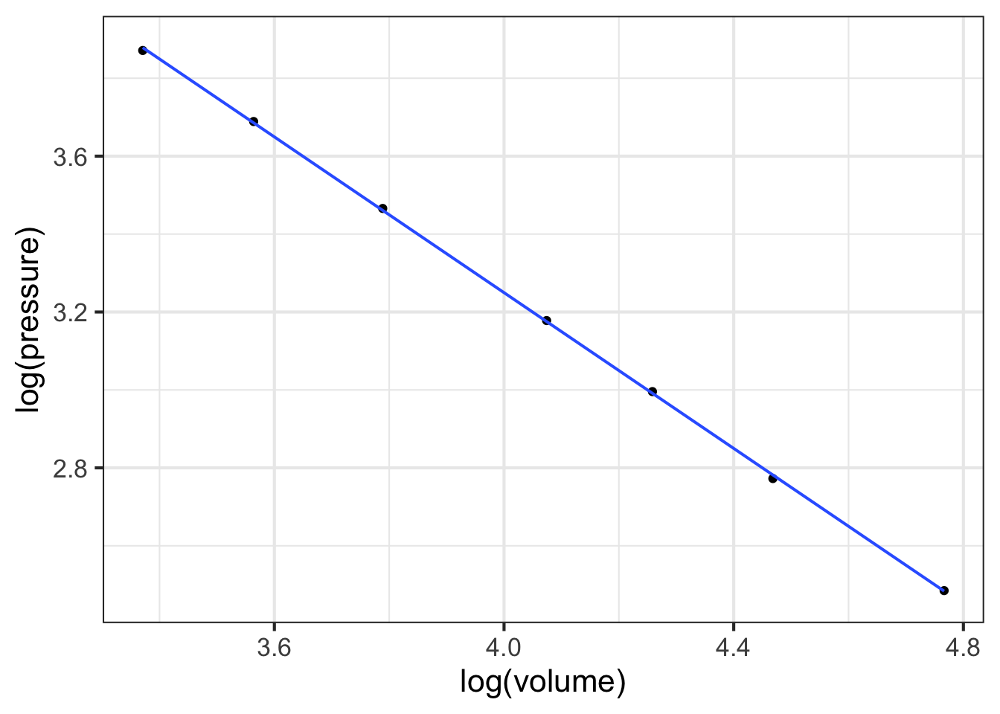

log10(1390) - log10(1)
## [1] 3.14301514 Magnitude
People accomplish a familiar mathematical task with hardly any mental effort: comparing two numbers to determine which is bigger. This is easy because we have adopted a system for writing numbers that makes it easy. For the Romans and Europeans up through the 13th century, numbers were hard to work with. For instance, which of these three numbers is bigger? \[\text{MLI or CXII or XXXIII}\]

Now try the same task with Arabic numerals: Which is bigger?
\[\text{512 or 33 or 1051}\] You can see the answer at a glance. The algorithm is straightforward: select the number with the largest number of digits. If there is a tie, refer to the first digit. If there is still a tie, refer to the next digit. In contrast, it takes much more work with Roman numerals. For instance, IC is about fifteen times bigger than VI, even though I is much smaller than V.
14.1 Order of magnitude
We will refer to judging the size of numbers by their count of digits as reading the magnitude of the number. To get started, consider numbers that start with 1 followed by zeros, e.g. 100 or 1000. We will quantify the magnitude as the number of zeros: 100 has a magnitude of 2 and 1000 has a magnitude of 3. In comparing numbers by magnitude, we way things like, “1000 is an order of magnitude greater than 100,” or “1,000,000” is five orders of magnitude larger than 10.
Many phenomena and quantities are better understood in terms of magnitude than in terms of number. An example: Animals, including humans, go about the world in varying states of illumination, from the bright sunlight of high noon to the dim shadows of a half-moon. To be able to see in such diverse conditions, the eye needs to respond to light intensity across many orders of magnitude.
The lux is the unit of illuminance in the Système international. This table1 shows the illumination in a range of familiar outdoor settings:
| Illuminance | Condition |
|---|---|
| 110,000 lux | Bright sunlight |
| 20,000 lux | Shade illuminated by entire clear blue sky, midday |
| 1,000 lux | Typical overcast day, midday |
| 400 lux | Sunrise or sunset on a clear day (ambient illumination) |
| 0.25 lux | A full Moon, clear night sky |
| 0.01 lux | A quarter Moon, clear night sky |
For a creature active both night and day, the eye needs to be sensitive over 7 orders of magnitude of illumination. To accomplish this, eyes use several mechanisms: contraction or dilation of the pupil accounts for about 1 order of magnitude, photopic (color, cones) versus scotopic (black-and-white, rods, nighttime) covers about 3 orders of magnitude, adaptation over minutes (1 order), squinting (1 order).
More impressively, human perception of sound spans more than 16 orders of magnitude in terms of the energy impinging on the eardrum. The energy density of perceptible sound ranges from the threshold of hearing at 0.000000000001 Watt per square meter to a conversational level of 0.000001 W/m2 to 0.1 W/m2 in the front rows of a rock concert. But in terms of our subjective perception of loudness, each order of magnitude change is perceived in the same way, whether it be from street traffic to vacuum cleaner or from whisper to normal conversation. (The unit of sound measurement is the decibel (dB), with 10 decibels corresponding to an order of magnitude in the energy density of sound.)
| Situation | Energy level (dB) |
|---|---|
| Rustling leaves | 10 dB |
| Whisper | 20 dB |
| Mosquito buzz | 40 dB |
| Normal conversation | 60 dB |
| Busy street traffic | 70 dB |
| Vacuum cleaner | 80 dB |
| Large orchestra | 98 dB |
| Earphones (high level) | 100 dB |
| Rock concert | 110 dB |
| Jackhammer | 130 dB |
| Military jet takeoff | 140 dB |
6, 60, 600, and 6000 miles-per-hour are quantities that differ in size by orders of magnitude. Such differences often point to a substantial change in context. A jog is 6 mph, a car on a highway goes 60 mph, a cruising commercial jet goes 600 mph, and a rocket passes through 6000 mph on its way to orbital velocity. From an infant’s crawl to highway cruising is 2 orders of magnitude in speed.
Of course, many phenomena are not well represented in terms of orders of magnitudes. For example, the difference between normal body temperature and high fever is 0.01 orders of magnitude in temperature.2 An increase of 1 order of magnitude in blood pressure from the normal level would cause instant death! The difference between a very tall adult and a very short adult is about 1/4 of an order of magnitude.
Orders of magnitude are used when the relevant comparison is a ratio. “A car is 10 times faster than a person,” refers to the ratio of speeds. In contrast, quantities such as body temperature, blood pressure, and adult height are compared using a difference. Fever is 2\(^\circ\)C higher in temperature than normal. A 30 mmHg increase in blood pressure will likely correspond to developing hypertension. A very tall and a very short adult differ by about 2 feet.
One clue that thinking in terms of orders of magnitude is appropriate is when you are working with a set of objects whose range of sizes spans one or many factors of 2. Comparing baseball and basketball players? Probably no need for orders of magnitudes. Comparing infants, children, and adults in terms of height or weight? Orders of magnitude may be useful. Comparing bicycles? Mostly they fit within a range of 2 in terms of size, weight, and speed (but not expense!). Comparing cars, SUVs, and trucks? Differences by a factor of 2 are routine, so thinking in terms of order of magnitude is likely to be appropriate.
Another clue is whether “zero” means “nothing.” Daily temperatures in the winter are often near “zero” on the Fahrenheit or Celcius scales, but that in no way means there is a complete absence of heat. Those scales are arbitrary. Another way to think about this clue is whether negative values are meaningful. If so, thinking in terms of orders of magnitude is not likely to be useful.
14.2 Counting digits
Imagine having a digit counting function called digit(). It takes a number as input and produces a number as output. We don’t have a formula for digit(), but for some inputs, the output can be calculated just by counting. For example:
- digit(10) \(\equiv\) 1
- digit(100) \(\equiv\) 2
- digit(1000) \(\equiv\) 3
- … and so on …
- digit(1,000,000) \(\equiv\) 6
- … and on.
The digit() function easily can be applied to the product of two numbers. For instance:
- digit(1000 \(\times\) 100) = digit(1000) + digit(100) = 3 + 2 = 5.
Similarly, applying digit() to a ratio gives the difference of the digits of the numerator and denominator, like this:
- digit(1,000,000 \(\div\) 10) = digit(1,000,000) - digit(10) = 6 - 1 = 4
It is not clear that \(\ln()\) is a better user interface as a pattern-book function than digit(), or, as it is written, \(\log_{10}()\) and
log10(). People find it much easier to count by magnitudes of 10 than by the natural logarithm’s 2.718282….In practice, digit() is so useful that it could well have been one of our basic modeling functions: \[\text{digit(x)} = 2.302585 \ln(x)\] or, in R, log10(). We elected the natural logarithm \(\ln()\) rather than digit() for reasons that will be seen when we study differentiation.
You may have guessed that digits() is handy for computing differences in terms of orders of magnitude. Here’s how:
- Make sure that the quantities are expressed in the same units.
- Calculate the difference between the
digits()of the numerical part of the quantity.
What is the order-of-magnitude difference in velocity between a snail and a walking human? A snail slides at about 1 mm/sec, a human walks at about 5 km per hour. Putting human speed in the same units as snail speed: \[\begin{eqnarray}5 \frac{km}{hr} = \left[\frac{1}{3600} \frac{hr}{sec}\right] 5 \frac{km}{hr} &=& \\
\left[10^6 \frac{mm}{km}\right] \left[\frac{1}{3600} \frac{hr}{sec}\right] 5 \frac{km}{hr} &=& 1390 \frac{mm}{sec}
\end{eqnarray}\] Calculating the difference in digits() between 1 and 1390:
So, about 3 orders of magnitude difference in speed. To a snail, we walking humans must seem like rockets on their way to orbit!
The use of factors of 10 in counting orders of magnitude is arbitrary. A person walking and a person jogging are on the edge of being qualitatively different, although their speeds differ by a factor of only 2. Aircraft that cruise at 600 mph and 1200 mph are qualitatively different in design, although the speeds are only a factor of 2 apart. A professional basketball player (height 2 meters or more) is qualitatively different from a third grader (height about 1 meter).
14.3 Magnitude graphics
To display a variable from data that varies over multiple orders of magnitude, it helps to plot the logarithm rather than the variable itself. Let’s illustrate using the Engine data frame, which contains measurements of many different internal combustion engines of widely varying sizes. For instance, we can graph engine RPM (revolutions per second) versus engine mass, as in Figure 14.2.
gf_point(RPM ~ mass, data = Engines)
In the graph, most of the engines have a mass that is … zero. At least that is what it appears to be. The horizontal scale is dominated by the two huge 100,000-pound monster engines plotted at the right end of the graph.
Plotting the logarithm of the engine mass spreads things out, as in Figure 14.3.
gf_point(RPM ~ mass, data = Engines) %>%
gf_refine(scale_x_log10())
Note that the horizontal axis has been labeled with the actual mass (in pounds), with the labels evenly spaced in terms of their logarithm. This presentation, with the horizontal axis constructed this way, is called a semi-log plot.
When both axes are labeled this way, we have a log-log plot, as shown in Figure 14.4.
gf_point(RPM ~ mass, data = Engines) %>%
gf_refine(
scale_x_log10(),
scale_y_log10()
)
Semi-log and log-log axes are widely used in science and economics, whenever data spanning several orders of magnitude need to be displayed. In the case of the engine RPM and mass, the log-log axis shows that there is a graphically simple relationship between the variables. Such axes are very useful for displaying data but can be hard for the newcomer to read quantitatively. For example, calculating the slope of the evident straight-line relationship in Figure 14.4 is extremely difficult for a human reader and requires translating the labels into their logarithms.
Math in the World: Boyle’s Law
Robert Boyle (1627-1691) was a founder of modern chemistry and the scientific method in general. As any chemistry student already knows, Boyle sought to understand the properties of gasses. His results are summarized in Boyle’s Law.
The data frame Boyle contains two variables from one of Boyle’s experiments as reported in his lab notebook: pressure in a bag of air and volume of the bag. The units of pressure are mmHg and the units of volume are cubic inches.3
Famously, Boyle’s Law states that, at a constant temperature, the pressure of a constant mass of gas is inversely proportional to the volume occupied by the gas. Figure 14.5 shows a cartoon of the relationship.

Figure 14.6 plots out Boyle’s actual experimental data. I
gf_point(pressure ~ volume, data = Boyle) %>%
gf_lm()
## Warning: Using the `size` aesthetic with geom_line was deprecated in ggplot2 3.4.0.
## ℹ Please use the `linewidth` aesthetic instead.You can see a clear relationship between pressure and volume, but it is hardly a linear relationship.
Plotting Boyle’s data on log-log axes reveals that, in terms of the logarithm of pressure and the logarithm of volume, the relationship is linear.
gf_point(log(pressure) ~ log(volume), data = Boyle) %>%
gf_lm()

Figure 14.7 shows that Boyle’s log-pressure and log-volume data are a straight-line function. In other words:
\[\ln(\text{Pressure}) = a + b \ln(\text{Volume})\]
You can find the slope \(b\) and intercept \(a\) from the graph. For now, we want to point out the consequences of the straight-line relationship between logarithms.
Exponentiating both sides gives \[e^{\ln(\text{Pressure})} = \text{Pressure} = e^{a + b \ln(\text{Volume})} = e^a\ \left[e^{ \ln(\text{Volume})}\right]^b = e^a\, \text{Volume}^b\] or, more simply (and writing the number \(e^a\) as \(A\))
\[\text{Pressure} = A\, \text{Volume}^b\] A power-law relationship!
14.4 Reading logarithmic scales
Plotting the logarithm of a quantity gives a visual display of the magnitude of the quantity and labels the axis as that magnitude. A useful graphical technique is to label the axis with the original quantity, letting the position on the axis show the magnitude.
To illustrate, Figure 14.8(left) is a log-log graph of horsepower versus displacement for the internal combustion engines reported in the Engines data frame. The points are admirably evenly spaced, but it is hard to translate the scales to the physical quantity. The right panel in Figure 14.8 shows the same data points, but now the scales are labeled using the original quantity.

Engines data.frame plotted with log-log scales.
The tick marks on the vertical axis in the left pane are labeled for 0, 1, 2, 3, and 4. These numbers do not refer to the horsepower itself, but to the logarithm (base 10) of the horsepower. The right pane has tick labels that are in horsepower at positions marked 1, 10, 100, 1000, and 10000.
Such even splits of a 0-100 scale are not appropriate for logarithmic scales. One reason is that 0 cannot be on a logarithmic scale in the first place since \(\log(0) = -\infty\).
Another reason is that 1, 3, and 10 are pretty close to an even split of a logarithmic scale running from 1 to 10. It is something like this:
1 2 3 5 10 x
|----------------------------------------------------|
0 1/3 1/2 7/10 1 log(x)It is nice to have the labels show round numbers. It is also nice for them to be evenly spaced along the axis. The 1-2-3-5-10 convention is a good compromise; almost evenly separated in space yet showing simple round numbers.
14.5 Drill

**Part 1** What is the correct form for the relationship shown in @fig-exponential-neg - \(g(x) \equiv e^{-1.5} e^{10 x}\)
- \(g(x) \equiv 10 e^{-2 x}\)
- \(g(x) \equiv e^{10} e^{-1.5 x}\)
- \(g(x) \equiv 10 x^{-1.5}\)
- \(g(x) \equiv e^{10} e^{-2 x}\)
**Part 2** Which of these is the better modeling relationship for the following scenario: Your data looks linear on a semi-log plot. Power-law Exponential
**Part 3** Which of these is the better modeling relationship for the following scenario: Your data looks linear on a log-log plot. Power-law Exponential

**Part 4** What is the correct form for the relationship shown in @fig-power-law-neg? - \(g(x) \equiv e^10 x^{-1.5}\)
- \(g(x) \equiv e^{10} e^{-1.5 x}\)
- \(g(x) \equiv 10 x^{-2}\)
- \(g(x) \equiv e^{10} x^{-2}\)

**Part 5** What is the correct form for the relationship shown in @fig-power-law? - \(g(x) \equiv e^{2} x^{2}\)
- \(g(x) \equiv 2 x^{1.5}\)
- \(g(x) \equiv e^{2} x^{1.5}\)
- \(g(x) \equiv e^2 x^{-1.5}\)
- \(g(x) \equiv e^{2} e^{1.5 x}\)

**Part 6** @fig-scales-base2 shows a horizontal axis for a graph. How can you tell that this is a logarithmic axis? - The labels are evenly spaced and each label is a factor of 2 larger than the previous one.
- The labels are all multiples of 2.
- Trick question. It is not a log scale.

**Part 7** @fig-scales-semidecade shows a horizontal axis for a graph. How can you tell that this is a logarithmic axis? - Trick question. It is not a log scale.
- The labels are evenly spaced and each label is a factor of 3 larger than the previous one.
- The labels are 1, 3, 5, 10, …
- The 3 label is about halfway between the 1 and 10 label for each decade, and the 1 and 10 labels have the same spacing for every decade.

**Part 8** @fig-scales-bogus shows a horizontal axis for a graph. How can you tell that this is a logarithmic axis? - Trick question. It is not a linear scale.
- Each label is 10 + the previous label.
- The labels are 10, 20, 30, 40, …
- The 3 label is about halfway between the 1 and 10 label for each decade, and the 1 and 10 labels have the same spacing for every decade.
14.6 Exercises
Exercise 14.02
Using your R console, make the following log-log plot of horsepower (BHP) versus displacement (in cc, cubic-centimeters) of the internal combustion engines listed in the Engines data frame.
gf_point(BHP ~ displacement, data = Engines) %>%
gf_refine(scale_x_log10(), scale_y_log10()) %>%
gf_labs(x = "Displacement (cc)")
In the plot, you will see that the vertical axis has labels at 1, 10, 100, 1000, 10000. These numbers are hardly spaced evenly when plotted on a linear scale, but on the log scale they are evenly spaced. Since there is a factor of ten between consecutive labels, the interval between the labels is called a decade. On the horizontal axis, the labels are at 10, 1000, 100,000, and 10,000,000. Each of those intervals spans a factor of one hundred. For instance, from 1000 is one-hundred times 10, 100,000 is one-hundred times 1000, and so on. An interval of size 100 is said to span two decades, not 20 years but a factor of 100.
Based on the log-log plot, answer these questions.
**Part A** How many engines have a displacement of 1 liter or less? none 7 14 25
**Part B** Using the log-log plot, how many decades of BHP are spanned by the data? 4 5 100
Exercise 14.05
In this exercise, you will use your R console to carry out some calculations with Boyle’s data as shown in Figure 14.6. To see how the data frame is organized, use the head(Boyle) and names(Boyle) commands.
The following R/mosaic commands plot out Boyle’s data and includes a command, gf_lm(), that will add a graph of the best straight-line model to the plotted points. Recall that the # symbol turns what follows on the line into a comment, which is ignored by R. By removing the # selectively you can turn on the display of log axes.
gf_point(pressure ~ volume, data = Boyle) %>%
gf_refine(
# scale_x_log10(),
# scale_y_log10()
) %>%
gf_lm()
**Part A** In your R console, plot pressure versus volume using linear, semi-log, and log-log axes. Based on the plot, and the straight-line function drawn, which of these is a good model of the relationship between pressure and volume? linear exponential power-law
Exercise 14.06
Recall Robert Boyle’s data on pressure and volume of a fixed mass of gas held at constant pressure. In Chapter Section 14.3 of the text you saw a graphical analysis that enables you to identify Boyle’s Law with a power-law relationship between pressure and volume: \[P(V) = a V^n\] On log-log axes, a power-law relationship shows up as a straight-line graphically.
Taking logarithms translates the relationship to a straight-line function:\[\text{lnP(lnV)} = \ln(a) + n\, \ln(V)\] To find the parameter \(n\), you can fit the model to the data. This R command will do the job:
fitModel(
log(pressure) ~ log(a) + n*log(volume), data = Boyle) %>%
coefficients()Run the model-fitting command in your R console. Then, interpret the parameters.
**Part A** What is the slope produced by `fitModel()` when fitting a power law model? Roughly -1 Almost exactly -1 About -1.5 Slope \(> 0\)
According to the appropriate model that you found in (A), interpret the function you found relating pressure and volume.
**Part B** As the volume becomes very large, what happens to the pressure? - Pressure becomes very small.
- Pressure stays constant
- Pressure also becomes large.
- None of the above
Return to your use of fitModel() to find the slope of the straight-line fit to the appropriately log-transformed model. When you carried out the log transformation, you used the so-called “natural logarithm” with expressions like log(pressure). Alternatively, you could have used the log base-10 or the log base-2, with expressions like log(pressure, base = 10) or log(volume, base = 2). Whichever you use, you should use the same base for all the logarithmic transformations when finding the straight-line parameters.
**Part C** **(D)** Does the **slope** of the straight line found by `fitModel()` depend on which base is used? - No
- Yes
- There is no way to tell.
**Part D** **(E)** Does the **intercept** of the straight line found by `fitModel()` depend on which base is used? Yes No
Exercise 14.07
Here is a plot of the power output (BHP) versus displacement (in cc) of 39 internal combustion engines.
gf_point(
BHP ~ displacement, data = Engines
) %>%
gf_lims(y = c(0, 30000))
**Part A** Your study partner claims that the smallest engine in the data has a displacement of 2000 cc (that is, 2.0 liters) and 100 horsepower. Based only on the graph, is this claim plausible? - Yes, because 2000 cc and 100 hp would look like (0, 0) on the scale of this graph.
- Yes, because that size engine is typical for a small car.
- No, the smallest engine is close to 0 cc.
- No, my study partner is always wrong.
Semi-log scales
The next command will make a graph of the same engine data as before, but with a log scale on the horizontal axis. The vertical axis is still linear.
gf_point(
BHP ~ displacement, data = Engines
) %>%
gf_refine(scale_x_log10())
**Part B** Using just the graph, answer this question: The engines range over how many decades of displacement? (Remember, a decade is a factor of 10.) 7 decades Can’t tell \(10^7\) decades About 3.5 decades
Exercise 14.08

**Part A** Consider the axis scales shown above. Which kind of scale is the horizontal axis? linear logarithmic semi-logarithmic log-log
**Part B** Which kind of scale is the vertical axis? linear logarithmic semi-logarithmic log-log
**Part C** Given your answers to the previous two questions, what kind of plot would be made in the frame being displayed at the top of this question? semi-log log-log linear-linear
Problem with Modeling Exercises/tiger-have-fork.Rmd
Exercise 14.10
The graph comes from an online guide, “Retirement Income Analysis with Scenario Matrices,” published in 2019 by William F. Sharpe, winner of the Nobel Prize in economices in 1990. The guide is intended to be of interest to those planning for retirement income who also happen to have a sophisticated understanding of mathematics and computing. You may or may not be in the former group, but it is hoped that, as you follow this course, you are becoming a member of the later group.
## Warning in normalizePath("www/rismat-mortality.png"):
## path[1]="www/rismat-mortality.png": No such file or directory
As you can see, the graph shows nearly parallel straight-line functions for both women and men, with women somewhat less likely than men to die at any given age.
**Part A** What is the format of the graphics axes? linear semi-log log-log
**Part B** If the age axis had a logarithmic axis, which of the following would be true? - The interval from 50 to 55 would be graphically larger than the interval from 95 to 100.
- The interval from 50 to 55 would be graphically smaller than the interval from 95 to 100.
- The two intervals would have the same graphical length.
**Part C** At age **100**, which of these is closest to the mortality rate for men? About 10% About 20%. About 40%. About 60%
**Part D** At age **65**, women have a lower probability of dying than men. How much lower, proportionately? - About 5% lower than men
- About 15% lower than men.
- About 40% lower than men.
**Part E** A rough estimate for the absolute limit of the human lifespan can be made by extrapolating the lines out to a mortality of 100%. This extrapolation would be statistically uncertain, and the pattern might change in the future either up or down, but let's ignore that for now and simply extrapolate simply a line fitting the data from age 50 to 100. Which of these is the estimate made in that way for the absolute limit of the human lifespan? 105 years 110 years 120 years 130 years
**Part F** To judge from the graph, the function relating mortality to age is which of the following? - A straight-line function with positive slope.
- A power-law with a positive exponent.
- An exponentially increasing function with a horizontal asymptote at mortality = 0.
- An exponentially decaying function, with a horizontal asymptote at mortality = 100%.
Problem with Modeling Exercises/seahorse-ride-sheet.Rmd
Problem with Modeling Exercises/buck-spend-saw.Rmd
Problem with Modeling Exercises/child-sleep-bed.Rmd
14.7 Mini-project
Exercise COVID-19 pandemic
You have likely heard the phrase “exponential growth” used to describe the COVID-19 pandemic. Let’s explore this idea using actual data.
The COVID-19 Data Hub is a collaborative effort of universities, government agencies, and non-governmental organizaions (NGOs) to provide up-to-date information about the pandemic. We will use the data about the US at the whole-country level. (There is also data at state and county levels. Documentation is available via the link above.)
Perhaps the simplest display is to show the number of cumulative cases (the confirmed variable) and deaths as a function of time. We will focus on the data up to June 30, 2020.
Copy the R/mosaic commands below into your R console to produce a graph of confirmed cases in blue and deaths in tan.
gf_line(
deaths ~ date,
data = Covid_US %>%
filter(date < as.Date("2020-06-30")),
color = "orange3") %>%
gf_line(confirmed ~ date, color = "blue")
**Part A** As of mid June, 2020 about how many confirmed cases were there? (Note that the labeled tick marks refer to the beginning of the month, so the point labeled `Feb` is February 1.) about 50,000 about 200,000 about 500,000 about 1,000,000 about 2,000,000 about 5,000,000
This code makes the same graphic as above, but taking the logarithm (base 10) of the number of cases (that is, confirmed) and of the number of deaths. Since we are taking the logarithm of only the y-variable, this is called a “semi-log” plot.
gf_point(
log10(confirmed) ~ date,
data = Covid_US %>%
filter(date < as.Date("2020-06-30")),
color = "dodgerblue") %>%
gf_point(log10(deaths) ~ date, color = "orange3") Up through the beginning of March in the US, it is thought that most US cases were in people traveling into the US from hot spots such as China and Italy and the UK, as opposed to contagion between people within the US. (Such contagion is called “community spread.”) So let’s look at the data representing community spread, from the start of March onward.
Exponential growth appears as a straight-line on a semi-log plot. Obviously, the overall pattern of the curves is not a straight line. The explanation for this is that the exponential growth rate changes over time, perhaps due to public health measures (like business closures, mask mandates, etc.)
The first (official) US death from Covid-19 was recorded was recorded on Feb. 29, 2020. Five more deaths occurred two days later, bringing the cumulative number to 6.
**Part B** The tan data points for Feb 29/March 1 show up at zero on the vertical scale for the semi-log plot. The tan data point for March 2 is at around 2 on the vertical scale. Is this consistent with the facts stated above? - No. The data contradict the facts.
- Yes. The vertical scale is in log (base 10) units, so 0 corresponds to 1 death, since \(\log_{10} 1 = 0\).
- No. The vertical scale does not mean anything.
One of the purposes of making a semi-log plot is to enable you to compare very large numbers with very small numbers on the same graph. For instance, in the semi-log plot, you can easily see when the first death occurred, a fact that is invisible in the plot of the raw counts (the first plot in this exercise).
Another feature of semi-log plots is that they preserve proportionality. Look at the linear plot of raw counts and note that the curve for the number of deaths is much shallower than the curve for the number of (confirmed) cases. Yet on the semi-log plot, the two curves are practically parallel.
On a semi-log plot, the arithmetic difference between the two curves tells you what the proportion is between those curves. The parallel curves mean that the proportion is practically constant. Calculate what the proportion between deaths and cases was in the month of May. Here’s a mathematical hint: \(\log_{10} \frac{a}{b} == \log_{10} a - \log_{10} b\). We are interested in \(\frac{a}{b}\).
**Part C** What is the proportion of deaths to cases during the month of May? about 1% about 2% about 5% about 25% about 75%
In many applications, people use semi-log plots to see whether a pattern is exponential or to compare very small and very large numbers. Often, people find it easier if the vertical scale is written in the original units rather than the log units. To accomplish both, the vertical scale can be ruled with raw units spaced logarithmically, like this:
gf_point(confirmed ~ date,
data = Covid_US %>% filter(date < as.Date("2020-06-30")),
color = "dodgerblue") %>%
gf_point(deaths ~ date, color = "orange3") %>%
gf_refine(scale_y_log10())
The labels on the vertical axis show the raw numbers, while the position shows the logarithm of those numbers.
The next question has to do with the meaning of the interval between grid lines on the vertical axis. Note that on the horizontal axis, the spacing between adjacent grid lines is half a month.
**Part D** What is the numerical spacing (in terms of raw counts) between adjacent grid lines on the vertical axis? (Note: Two numbers are different by a "factor of 10" when one number is 10 times the other." Similarly, "a factor of 100" means that one number is 100 times the other. 10 cases 100 cases A factor of 10. A factor of 100.
we are using the Kelvin scale, which is the only meaningful scale for a ratio of temperatures.↩︎
Boyle’s notebooks are preserved at the Royal Society in London. The data in the
Boyledata frame have been copied from this source.)↩︎